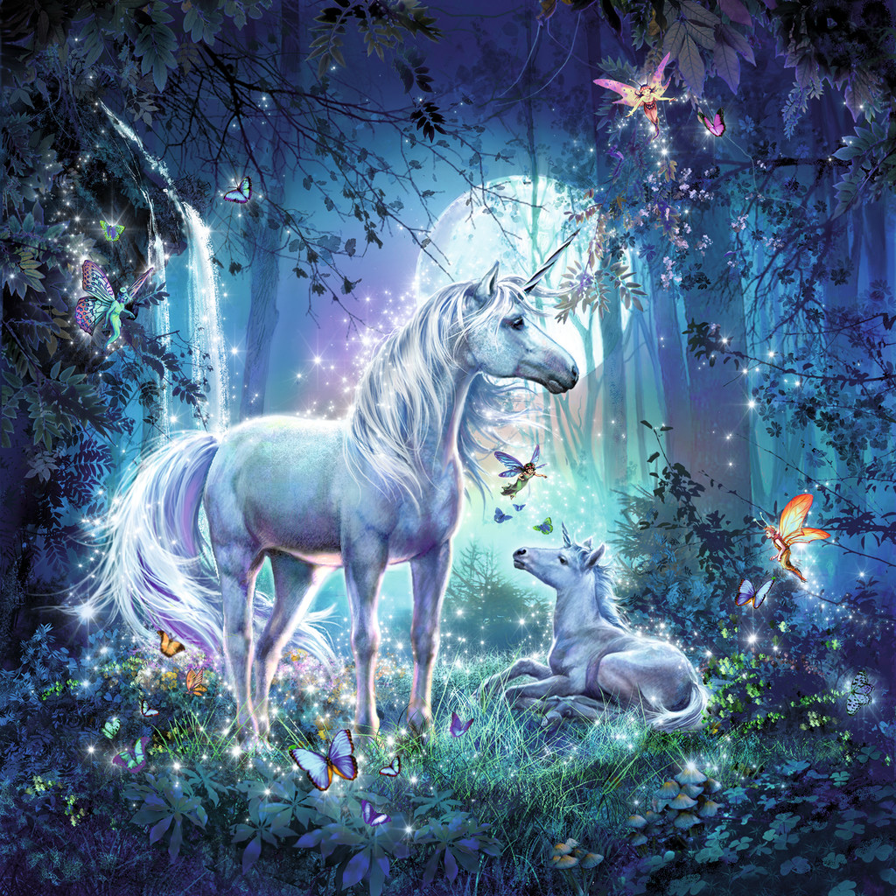

|
|
Wenn vor allem kleine Kinder das Wort Einhorn hören, denken sie sofort an hübsche Pferde mit einem Horn und weiß, pinken Fell. Sie haben ein wunderschönes Bild vor Augen und müssen lächeln. Denn Einhörner sind einfach tolle Wesen.
|

|
Doch wie bei jedem Tier gibt es Vor- und Nachteile beim Umgang.
Gehen wir doch mal davon aus, dass es Einhörner wirklich im Alltag geben würde. Zum Beispiel als graue kleine Ponys am Tag und in der Nacht werden sie durch den magischen Spruch : "Silberstern, Silberstern, hoch am Himmel, bist so fern. Funkelst hell und voller Macht, brichst den Bann noch heute Nacht. Lass dies Pony grau und klein endlich doch ein Einhorn sein." , wie in den Sternenschweif Büchern in ein Einhorn verwandelt. Das wäre doch wirklich toll. Ich glaube sehr viele kleine Mädchen würden sehr viel dafür tun ein Einhorn zu haben. Man könnte mit Ihnen durch die Nacht fliegen, sprechen und vielen Menschen mit ihrer Magie helfen. So zumindest stellen es sich wahrscheinlich die Kinder vor ein Einhorn zu haben, die die Sternenschweif Bücher kennen.
Doch was ist, wenn man sich mal den realistischen Umgang mit einem Einhorn überlegt? Wenn ein Pferd wirklich die ganze Zeit ein Horn auf der Stirn hätte. Das wäre wohl ziemlich unpraktisch. Theoretisch könnte das Horn einen picksen oder gar stechen. Wie gefährlich wäre es, wenn ein Einhorn her galoppiert kommt und nicht rechtzeitig zum stehen kommt. Und würde das Horn nicht auch stören, während das Pferd frisst, grast oder trinkt? Würde das Horn vielleicht in unserer Welt immer irgendwo im Stall stecken bleiben? Wir wissen es nicht, aber so böse es klingt, anscheind ist es wirklich gut so, dass Einhörner Fabelwesen sind! :-)
|